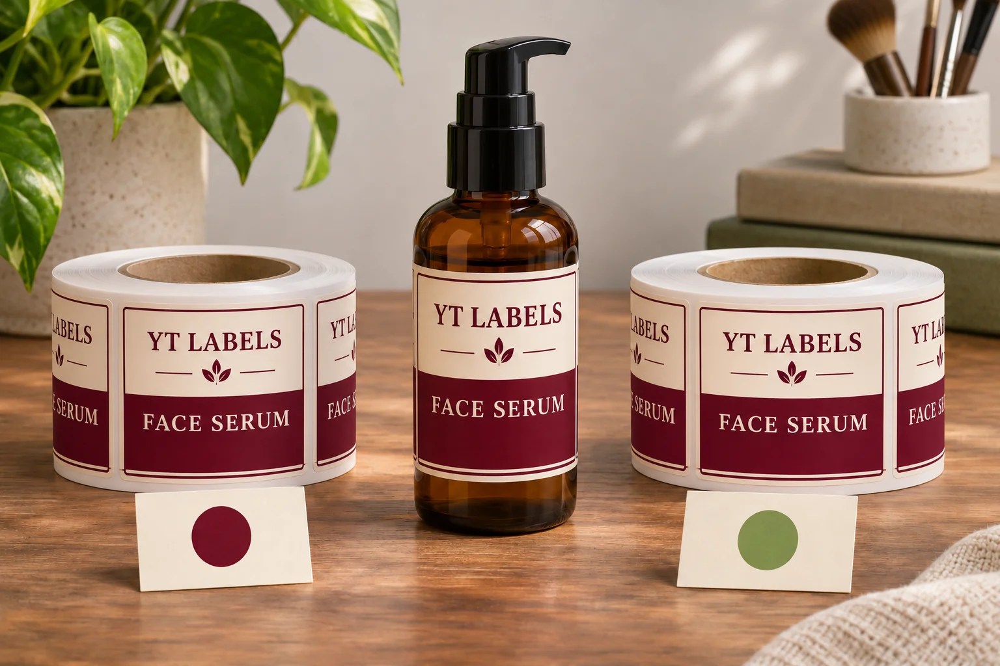
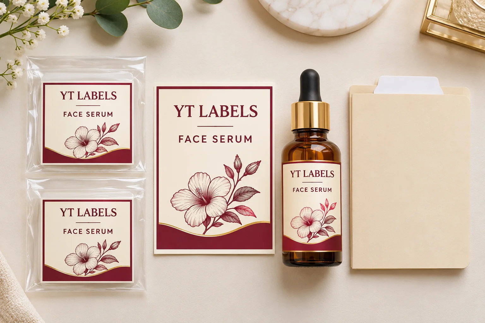

Qualify a second cosmetic label source before relying on it for an urgent order. Decide whether you need a supplier merely assessed, a specific construction approved, or an order-ready route with current materials and a confirmed response window. Those are different readiness states. Keep them visible while you continue buying from your primary printer.
A backup need not receive half of every order to be useful. It does need a defined job, the right approval evidence and an update process. An old quotation and a name in a contact list cannot show which artwork version the supplier would print today or whether the offered stock is still available.

Define the event your second source must cover
Start with the interruption you are planning for and the actual packaging requirement. Is the concern a missed run at one printer, loss of a particular stock, or inability to ship by the required receiving window? Ask what an alternate route would need to change in that situation. Two printers depending on the same unresolved material availability do not automatically solve a material-shortage scenario.
Limit the initial scope if necessary. A brand may qualify a second source for its stable best-selling label before extending the work to every decorative variation. List included SKUs, components, constructions and receiving operations. Avoid describing an entire range as covered when only one plain version has been sampled.
Certified Labeling Solutions describes a second-source qualification service, including retaining current specifications and approved references. This is an example of a real purchasing arrangement, not evidence of YT capacity or a universal activation time. For your order, ask the candidate to state the readiness it can support and the conditions still to be checked.
Separate keeping an alternate from moving the whole account
A full supplier transfer replaces a route. A backup program maintains an alternate while the primary remains in use. The difference is the need to keep two identified routes aligned with the brand's current requirement, even during periods with no purchase from the second source.
Use the printer transfer pack to communicate portable product requirements and the files you are permitted to supply. Then obtain a separate proposal and appropriate evidence for the alternate construction. Do not carry the first printer's approval across simply because the material descriptions or rendered artwork look similar.
State any differences the brand can accept and any that need further review. The label applicator may need to review a different web build, while the brand may need to review a changed appearance. Keep route-specific approvals attached to that route. A secondary supplier's accepted output must not silently replace the primary reference in everyone's records.

Use a readiness register you can update
| Readiness item | Evidence to identify | What remains open |
|---|---|---|
| Product coverage | SKU, component, artwork revision, container and intended use. | Unincluded versions, packaging changes or later operations. |
| Candidate route | Actual proposed construction, print/finish route and supplied format. | Unknown components or differences from the accepted requirement. |
| Approval state | Identified proof, applied sample and relevant line review; named release owners. | Reviews still needed before any alternate labels may be used. |
| Activation state | Dated commercial response, material availability, order contact and stated prerequisites. | Unconfirmed capacity, expired assumptions or missing approval before ordering. |
Fill the register for each proposed backup SKU. Obtain the candidate's response about missing inputs and the brand or co-packer's response about required approval. Mark the route as assessed, awaiting evidence, technically approved within a stated scope, or commercially confirmed for a particular order. Do not collapse these states into a single green “ready” cell.
Assign an owner to send controlled artwork and container changes to both routes. Ask each supplier to acknowledge what that change reopens. A standby file from before a bottle coating change or ingredients revision should prompt a review, not an automatic reorder. Record when the alternate's commercial and supply assumptions were last confirmed.
Activate the plan against the current job
When the primary route cannot meet the job, compare the alternate's latest state with the actual needed versions and quantities. Confirm material availability, remaining checks and the receiving window in the new order. The backup's earlier sample approval may reduce uncertainty about one construction; it does not reserve press time or prove current stock unless the parties have agreed that separately.
For example, a hypothetical serum label has an approved alternate on one bottle. If the urgent order uses the same bottle and current artwork, the buyer can ask whether those approvals still cover the offer. If the urgent version adds foil or uses a new container surface, the register should expose that difference before a delivery commitment is made.
Hold activation where an order-critical review remains open. Use the construction change guide if the candidate now proposes different materials, and the line trial brief for an application review. Keep the scope proportionate to the actual change and its responsible owner.
Request a response for a defined backup scope
Send the covered SKUs, current artwork and construction references, container details, quantities and required supply window. State what has already been approved and what evidence is still needed. Ask for the proposed route and prerequisites without assuming immediate availability. The form prepares a message; share reference files and sample records by email or WhatsApp.
Prepare a second-source inquiry